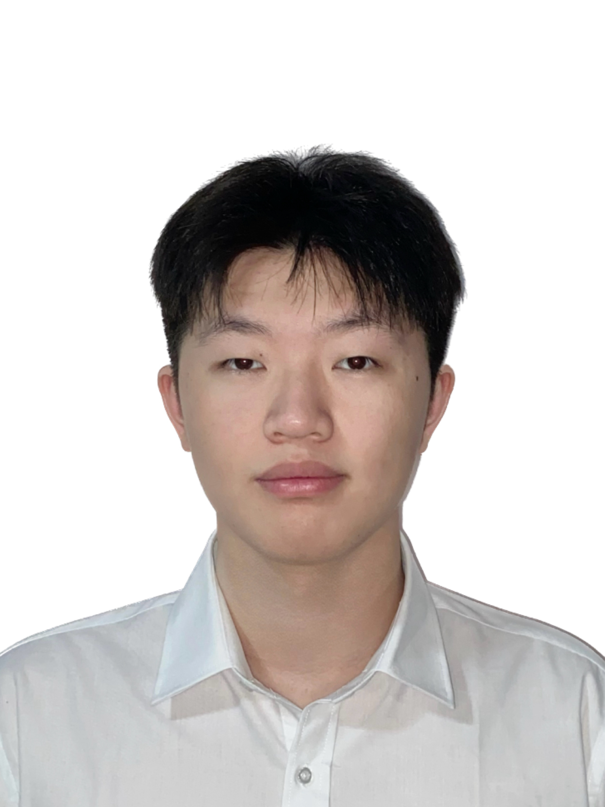

2026.01 - 2026.07
德国大陆汽车电子 Aumovio
AI 软件开发实习生
- 参与智能前灯与车载投影系统开发，负责视觉模型选型、适配、接口集成及端侧部署，定位并优化实时推理中的卡顿、延迟与误检问题。
- 开发大模型驱动的车载交互与工程自动化应用，围绕 AI 互动游戏与客户需求解析两类场景，完成相关功能模块开发、交互逻辑调试与接口集成，将大模型能力应用于车载交互与需求处理流程。

Experience
AI 软件开发实习生
计算机视觉实习生
Selected work
从视觉感知、端侧部署到大模型应用，关注真实场景中的稳定性、时延与交互体验。
完成模型选型、接口适配与端侧部署，识别路口、行人及过街意图，为智能前灯远近光切换与防眩目控制提供感知结果；优化推理链路，实现 200 ms 内完成全流程画面分析与结果输出。
应用场景 识别路口、行人及过街意图，为智能前灯远近光切换与防眩目控制提供感知结果。
个人工作 完成模型选型、接口适配与端侧部署，优化推理链路中的卡顿、延迟与误检问题。
项目结果 将全流程画面分析和结果输出控制在 200 ms 内，为车灯控制提供实时感知结果。
将驾驶玩法拆解为车辆运动、喷气控制与动作回放等模块，借助 AI 编程基于 Godot 完成开发，支持倒挂行驶、空中翻滚及自由视角回放；围绕操控手感与镜头交互持续调试，通过多帧率回归测试验证功能，并配置 GitHub Actions 自动测试与构建，完成 Windows 版本开源发布。
需求与设计 将驾驶玩法拆解为车辆运动、喷气控制与动作回放模块，借助 AI 编程基于 Godot 完成开发。
功能与调试 实现倒挂行驶、空中翻滚及自由视角回放，围绕操控手感与镜头交互持续调试。
验证与交付 通过多帧率回归测试验证功能，配置 GitHub Actions 自动测试与构建，完成 Windows 版本开源发布。
针对取件信息分散的问题，评估平台接入条件并确定可落地方案，借助 AI 编程基于 SwiftUI 与 WebKit 开发 iOS 应用，接入淘宝待取清单并支持短信解析导入；设计跨来源去重与状态合并规则，避免异常读取覆盖本地记录，补充断网重试和登录失效恢复流程，通过自动化测试与网页交互验证。
方案与接入 评估平台接入条件，基于 SwiftUI 与 WebKit 接入淘宝待取清单，支持短信解析导入。
数据与可靠性 设计跨来源去重与状态合并规则，避免异常读取覆盖本地记录，补充断网重试和登录失效恢复流程。
开发与验证 借助 AI 编程完成应用开发，通过自动化测试与网页交互验证。
构建视觉预测模型，估计驾驶位与副驾驶位阳光辐射值，为遮阳系统调节提供算法支持；预测准确率在MAE@100 指标下稳定超过 90%，算法已应用于奇瑞、蔚来多款量产车型。
应用场景 结合车载摄像头画面与车机实时数据，估计驾驶位与副驾驶位阳光辐射值，为遮阳系统调节提供算法支持。
个人工作 独立完成模型搭建、训练与测试，通过超参数调优、特征优化及预测误差分析，提升复杂光照与动态场景下的预测表现。
项目结果 MAE@100 指标下预测准确率稳定在 90% 以上，应用于奇瑞、蔚来多款量产车型。
Profile
上海大学电子信息硕士在读（2024.09–2027.06），研究方向为机器学习、大语言模型；湖南理工大学电子信息工程本科（2020.09–2024.06）。
研究生二等学业奖学金 · 本科一等、二等学业奖学金 · 2024 届优秀本科毕业生